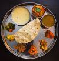

Appetizers
GF = Gluten Free | DF = Dairy Free | 🍃 = Vegetarian
-
Soft, juicy dumplings hand-folded and steamed to perfection. Served with our savory chutney. A must-try comfort food—flavorful, satisfying, and deeply craveable.
🍃•Vegetable — A hearty mix of ginger, garlic, onion, cabbage, broccoli, carrots, peas, corn, and more.
•Chicken — Ground chicken breast with garlic and ginger.
•Beef — Seasoned ground beef with bold aromatics.
•Mix It All — Can’t decide? Try all three—chef’s selection.
-
Paratha with Dal | DF |🍃
Pan-fried crispy pancake bread served with warm, earthy lentil soup, gently spiced with ginger, cumin, and garlic. Hearty, smooth, and soothing—vegetarian comfort food done right.
-
Pan-fried crispy pancake bread served with served with tender chicken in a mild, savory curry made with traditional Nepali spices. Rich, comforting.
-
Golden, spiced fritters made with chickpea flour and deep-fried until crisp. Served with a sweet and tangy tomato chutney that perfectly balances each bite.
Choose 1 topping:
•Jasha — Minced chicken, onion, ginger & cilantro—crispy outside, juicy inside.
🍃•Onion — Light and crunchy with bright herbs and warming spice.
🍃•Cauliflower — Tender florets in a crisp, flavorful shell.
🍃•Buffalo Cauliflower — Tossed in house buffalo sauce for a spicy, tangy twist.
🍃•Sag — Mustard greens and ginger—earthy, bold, and unique. -
Crispy fries tossed with house-made potato poutine, cabbage,paprika, garlic, and cilantro. Comfort food with a savory, spiced kick—unexpected and unforgettable.
-
Golden-fried pastry pockets stuffed with seasoned ground beef and garlic. Crunchy on the outside, juicy on the inside—served with sweet n spicy mayo for a creamy, fiery finish.
-
pastry filled with curried potatoes and peas, fried until golden and crisp.
Served with a sweet and tangy tomato chutney for the perfect balance of spice and zing. A warm, craveable vegan snack.
{kind=link}
{kind=link}
{kind=link}
{kind=link}
{kind=link}
{kind=link}
Bhutanese Entrees
GF = Gluten Free | DF = Dairy Free | 🍃 = Vegetarian
🌶️ = Touch of heat | 🌶️🌶️🌶️ = EXTRA HEAT
All entrees are served with a side of rice (excluding noodle plates)
-
A warm, gently spiced stew made with a blend of aged and smoked cheeses. Rich in flavor yet surprisingly light. Finished with garlic, chilies, and your choice of hearty or veggie add-ins:
Choose one:
🌶️🌶️🌶️•Ema Datsi — The bold national dish, made with fiery chilies
🌶️•Jasha (Chicken) — Tender, mild, and hearty
🌶️•Pak Sha (Pork Shoulder) — Savory and comforting
🌶️•Sikam (Dried Pork Belly) — Smoky, Deep, bold flavor
🌶️•Shrimp — Light, juicy, and full of depth
🍃•Shamu (Shiitake) — Earthy and satisfying
🌶️🍃•Cauliflower — Mild with a subtle crunch
🍃•Sag (Mustard Greens) — Bitter, bright, and peppery
🌶️🍃•Kewa (Potato) — Soft, creamy, and comforting -
Your choice of protein simmered in a bold ginger broth with garlic and chili peppers, these dishes are packed with warmth and a flavorful kick.
Choose one:
🌶️•Jasha (Chicken) — Tender, mild, and hearty
🌶️•Pak Sha (Pork Shoulder) — Savory and comforting
🌶️•Shrimp — Light, juicy, and full of depth
🌶️🍃•Tofu — Firm tofu gently simmered -
Tender, fragrant stir-fry of crisp vegetables—cabbage, carrots, bell peppers, and onions—sautéed with ginger, garlic, turmeric, cilantro, and savory soy sauce. Warm, earthy, aromatic, and light.
Choose one:
•Jasha (Chicken) — Tender and Hearty
•Pak Sha (Pork Shoulder) — Savory and comforting
•Shrimp — Light, juicy, and full of depth
🍃•Tofu — Firm tofu and satisfying -
🌶️ Creamy, spicy, soul-warming, and totally addicting! This is our premium twist on cup noodles, done right. Light yet full of flavor.
Soft ramen noodles soaked in a smoked cheese broth, cabbage, onions, peas, corn, carrots,chili peppers, garlic, cilantro, shiitake mushrooms, green beans & broccoli.
Enhance your bowl with a savory topping to add texture and depth (add’l charge):
•Battered Chicken — Crispy outside, juicy inside
•Pork Shoulder — Tender and richly flavored
•Battered Shrimp — Lightly crisp with a briny pop
🍃•Battered Tofu — Golden, soft-centered, and flavor-packed
{kind=link}
{kind=link}
{kind=link}
{kind=link}
Nepalese Entrees
GF = Gluten Free | DF = Dairy Free | 🍃 = Vegetarian
🌶️ = Touch of heat | 🌶️🌶️🌶️ = EXTRA HEAT
All entrees are served with a side of rice (excluding momo plates)
-
•Boneless Chicken Breast – simmered in a traditional Nepali curry made with tomatoes, onions, garlic, and a blend of spices like cumin, coriander, and turmeric. The sauce is warm, mildly spiced, and deeply comforting
• Chickpea Battered Fish or shrimp – simmered in mustard seed-infused sauce with garlic, tomatoes, and Nepali spices. Savory and slightly nutty curry with bold flavor and a crisp texture contrast
-

A balanced, flavorful tasting platter featuring your choice of curry, lentil soup(dal), three rotating vegetable sides, house chutneys, pickles, and dessert.
Pick one:
•Boneless Chicken Curry
•Boneless Fish Curry
•Shrimp Curry
🍃•Vegetable
-
Deep fried momos tossed in a sizzling stir-fry with bell peppers, onions, tomatoes, soy sauce, and a tangy house chili sauce. Crispy, bold, and packed with flavor in every bite.
•Chicken momo
•Beef momo
🍃•Vegetable momo
•Can’t decide? Try all three—chef’s mix -
Choice of topping tossed in a sizzling stir-fry with bell peppers, onions, tomatoes, soy sauce, and a tangy house chili sauce.
•Boneless Chicken Breast — Tender and Hearty
•Pork Shoulder — Savory and comforting
•Shrimp — Light, juicy with a delicate snap
•Swai (White Fish) — Mild, flaky, and buttery soft
🍃•Tofu — Firm tofu and satisfying -
A colorful sauté of shiitake mushrooms, tofu, and mixed vegetables tossed with bell peppers, onions, tomatoes, and soy sauce.
-
Diced potatoes and mustard greens gently simmered with tomatoes, garlic, and turmeric. Earthy, spiced, and full of homestyle comfort.
-
Your choice of chickpea battered protein fried until golden, and tossed in a sticky-sweet tangy glaze. Finished with sesame seeds for the perfect nutty crunch. Inspired by sweet & sour chicken-it’s crunchy, sticky, and full of flavor
•Boneless Chicken Breast
•Pork Shoulder
•Shrimp
•Swai (White Fish)
🍃•Tofu
🍃•Cauliflower
-
Your choice of chickpea battered protein fried until golden, and topped with fresh citrus slaw. Served with spicy mayo or sweet 'n' tangy tomato sauce for the perfect finish.
•Boneless Chicken Breast
•Shrimp
•Swai (White Fish)
🍃•Tofu
🍃•Cauliflower
-
Marinated in spices and simmered in a rich, decadent, creamy tomato sauce with warming Himalayan flavors. Comforting, aromatic, and crave-worthy.
•Boneless Chicken Breast
•Shrimp
•Swai (White Fish)
🍃•Tofu
-
Marinated boneless pork shoulder, flame-grilled until tender and charred just right. Tossed with fresh citrus slaw and cilantro for a burst of brightness, and served with rice. Juicy, satisfying, and full of bold textures
{kind=link}
{kind=link}
{kind=link}
{kind=link}
{kind=link}
{kind=link}
{kind=link}
{kind=link}
{kind=link}
{kind=link}